2030Nikšić · Montenegro
Since 2025 · Nikšić 2030
The Culturometer
A baseline for Montenegro's first European Capital of Culture.
Dr Beatriz García
From Sydney 2000 to Milano Cortina 2026, and from Liverpool 2008 to Nikšić 2030: 27 years at the centre of the Olympic Games and the European Capitals of Culture.

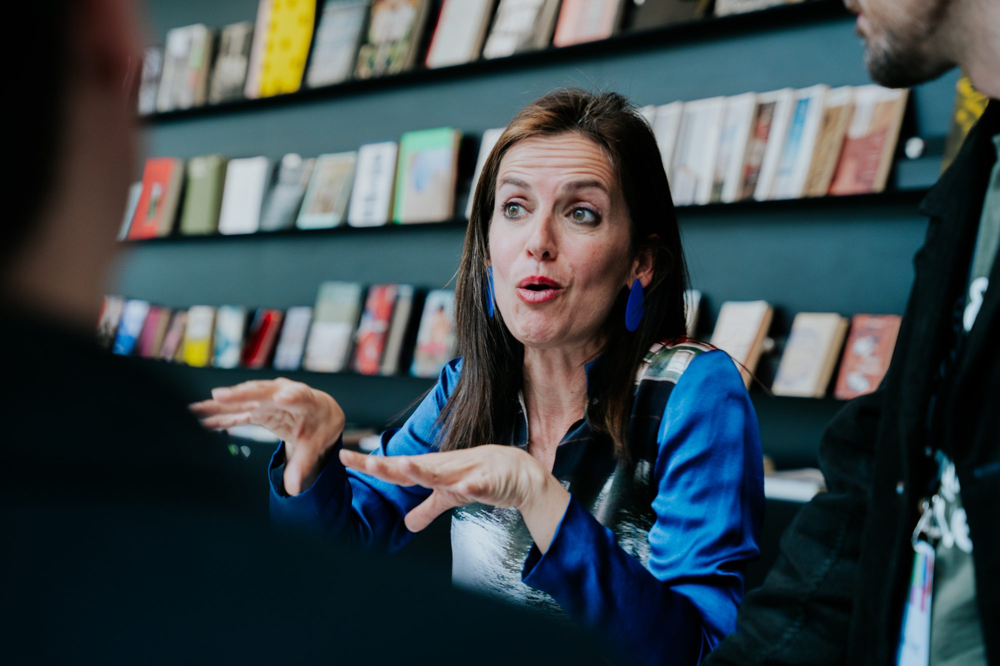
01 — Academic
Since 1999 I have measured it where it is hardest to see: over the long run, and at scale. I directed the Cultural Olympiad evaluations for London 2012 and Paris 2024, and Impacts 08, the study of Liverpool 2008 that became Europe's reference model for cultural impact evaluation. I also wrote the European Parliament's review of three decades of European Capitals of Culture.
Explore the research →Commissioned by the bodies that run the events
Books: The Olympic Games and Cultural Policy (Routledge, 2012) · Olympic Games: The Basics, with Andy Miah (Routledge, 2012) · Euphoric Cities, in development
First-hand fieldwork, Games after Games, is the evidence behind every report, talk and piece of advice.
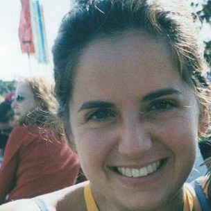
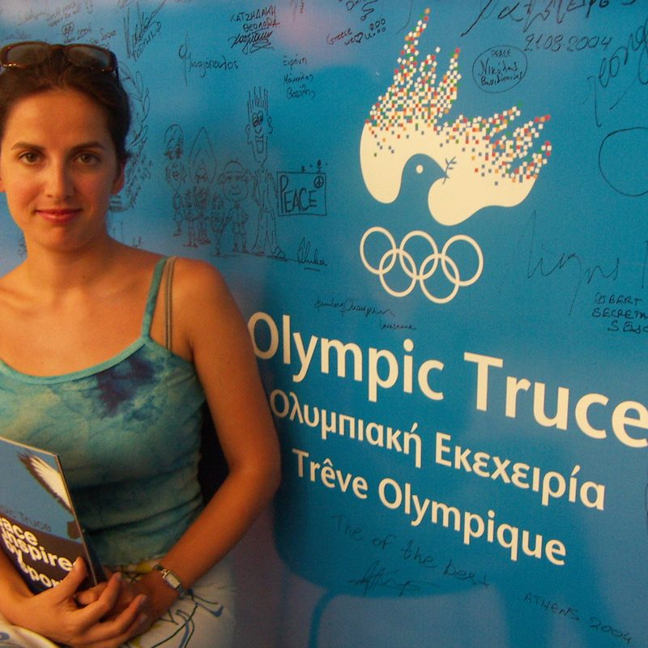
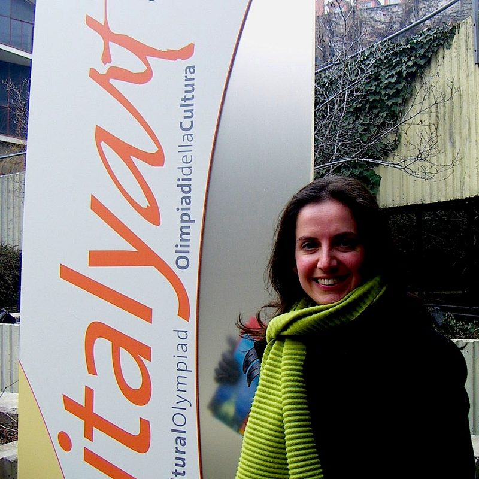
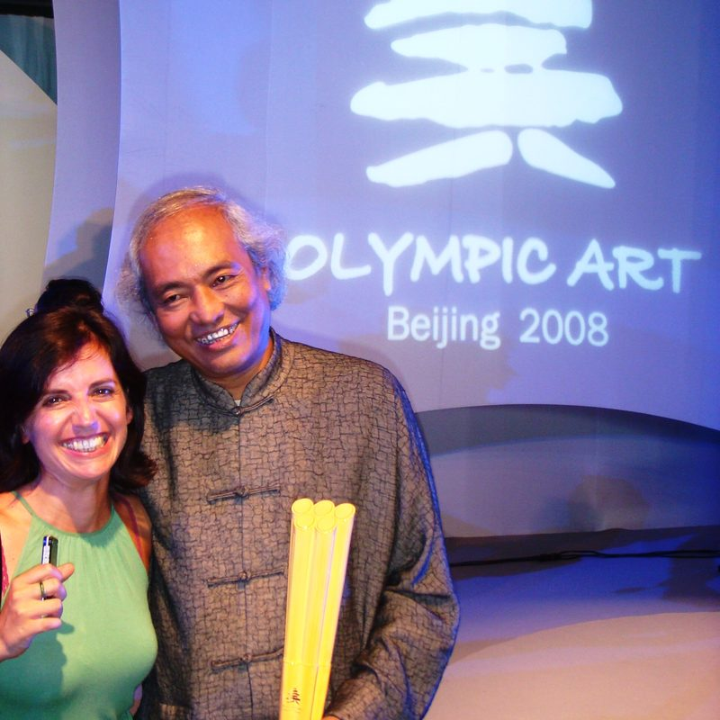
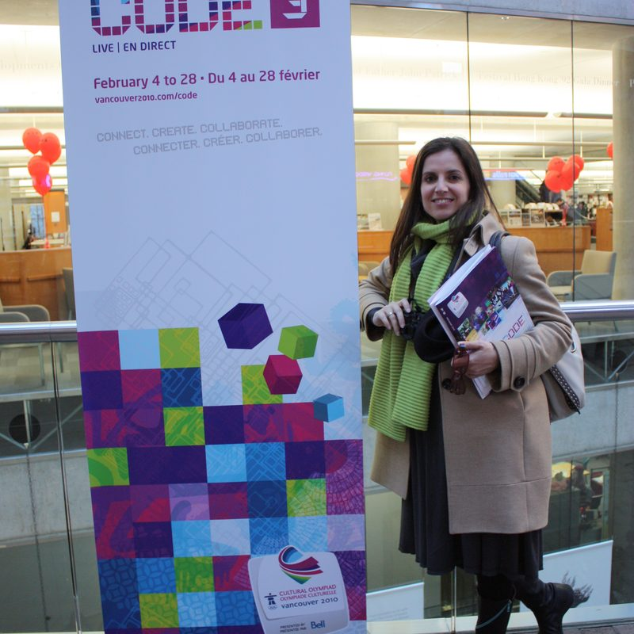
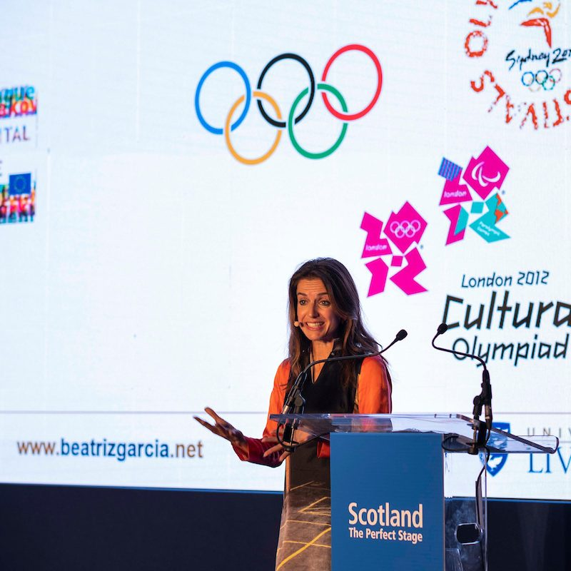
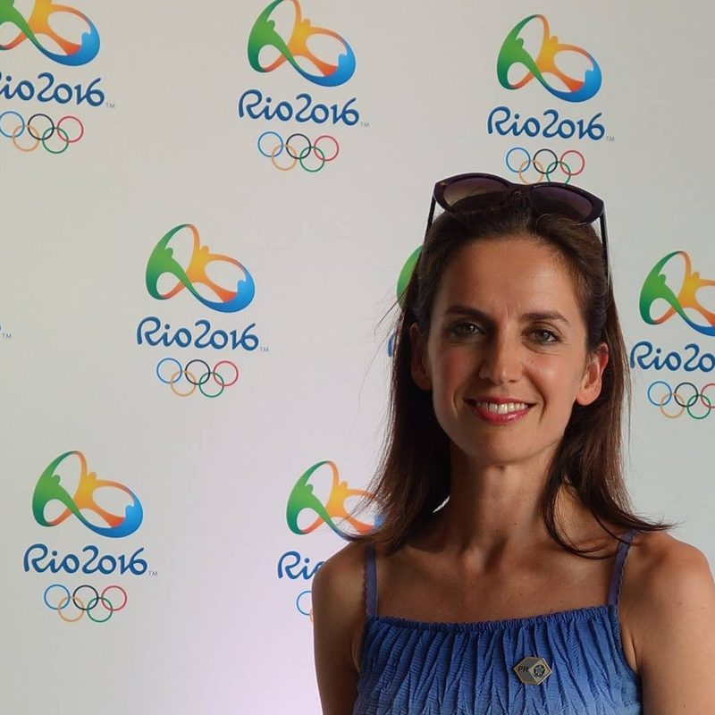
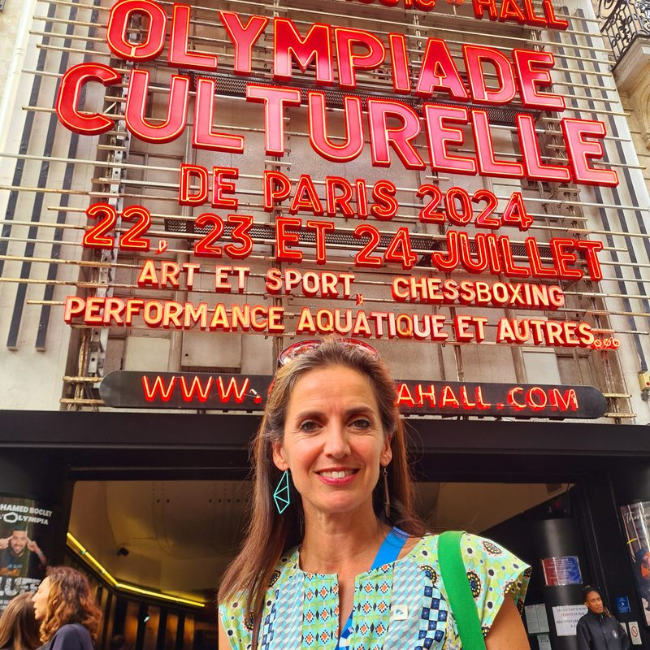
02 — Advisor
Cities, governments and organising committees call me when culture has to deliver for a place, and when they need to show that it did. I advise on cultural strategy, programme architecture, impact frameworks and legacy, from the first idea to ten years after.

A baseline for Montenegro's first European Capital of Culture.

Chairing the international board assessing Bodø 2024, with Nord University.
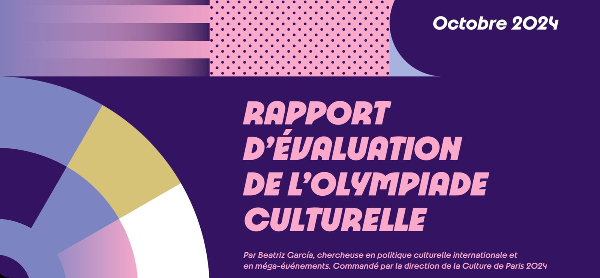
Directed for Paris 2024's culture directorate.
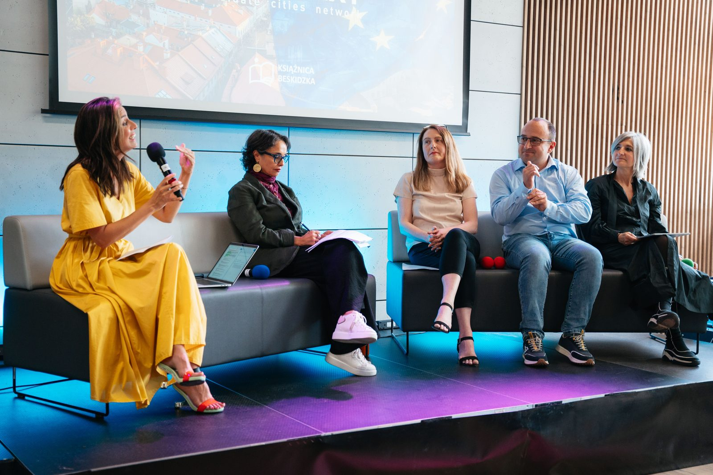
Europe's network of Capital of Culture candidate and host cities.
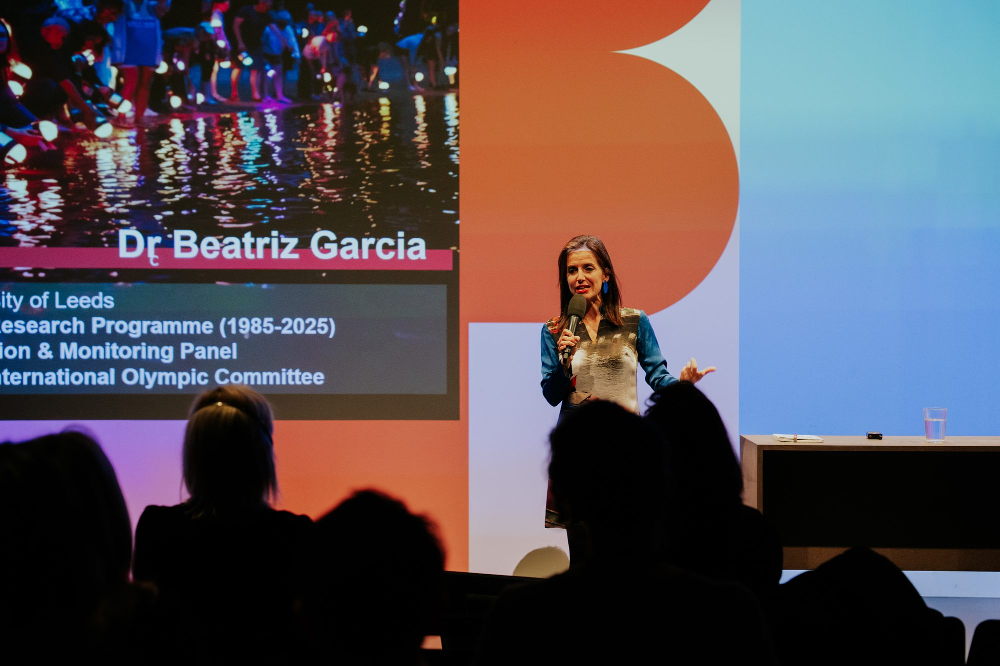
03 — Communicator
At the European Parliament, the European Commission, UNESCO's Creative Cities Network, the International Olympic Academy and Expo 2020 Dubai, in English, Spanish, Catalan and French. I write Euphoric Cities, and I have been interviewed by The New York Times, The Wall Street Journal, the BBC and El País.
NextCulture Summit Abu Dhabi · 8–10 December 2026
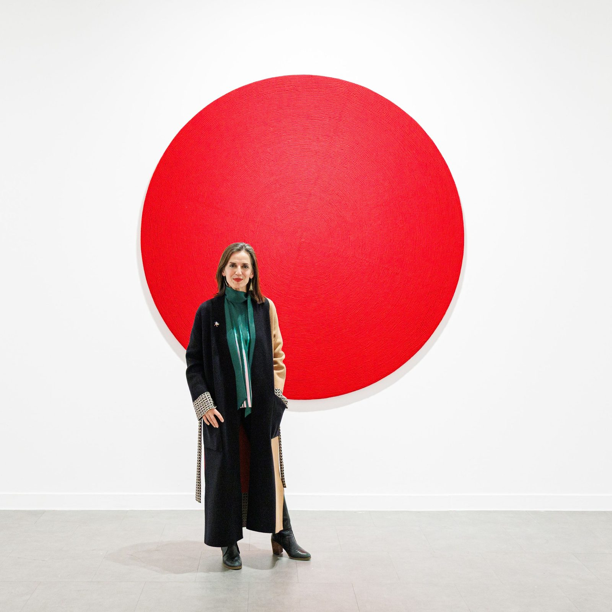
Euphoric Cities · the magazine
“I believe in the power of joy to make people more tolerant. And we all know about the power of fear to kill tolerance.”
Research and opinion on cities, major events and culture, written in my own voice, and the home of the book I am writing.
The New York Times · The Wall Street Journal · BBC News · BBC Radio 4 · The Guardian · The Times · El País · La Vanguardia · Deutsche Welle · Elle Italia · The Conversation
Based in Barcelona and Liverpool. Working worldwide in English, Spanish, Catalan and French.